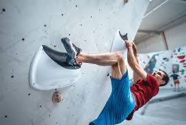
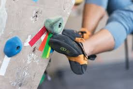
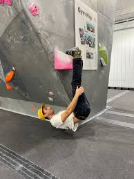
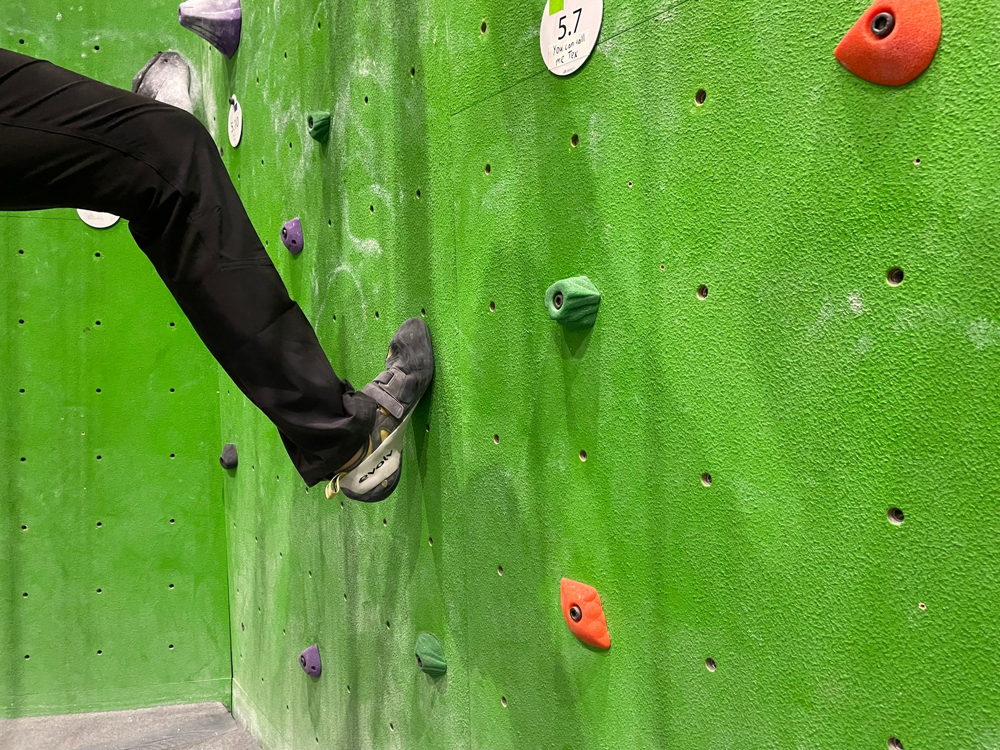
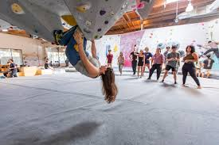
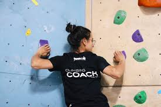
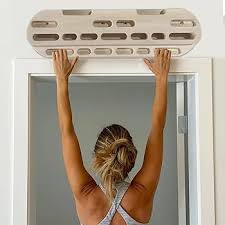

Heel/toe hook: Using either your heel or toe to hook onto a hold to prevent you from falling.

Bat hang: Rotating 180 degrees to use your feet to hang like a bat.

Smearing: Pressing your shoe against the wall when there are no holds for more friction.

Knee bar: Using your knee to wedge yourself between holds so you stay on balance.

Drop knee: Bringing one knee downward so that you can bring your hip closer to the wall giving you more reach.

Gaston: Pushing against two holds instead of holding onto them to move yourself.

Climbers use a hangboard to train grip strength and back strength.
Back to homepage
Another tip: Climbers often try to stay as close to the wall as possible for better balance
« Previous Next »